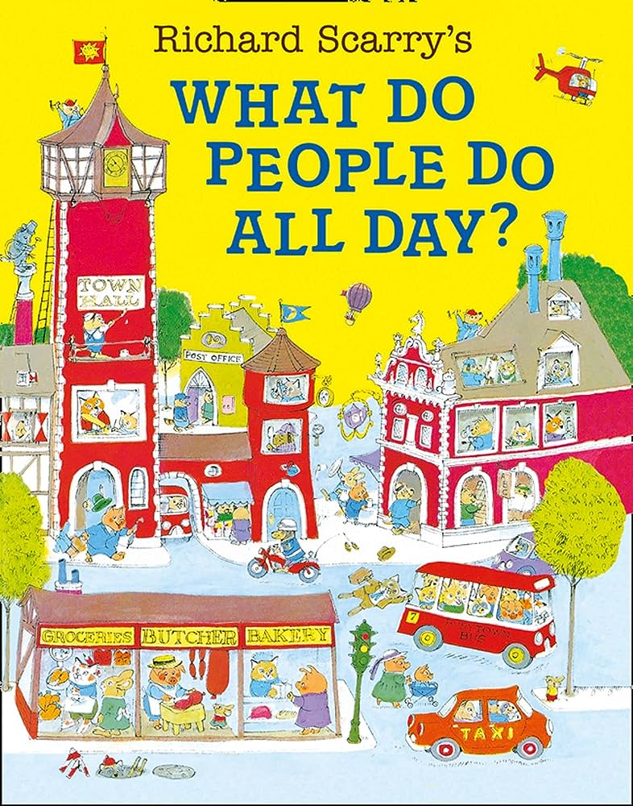
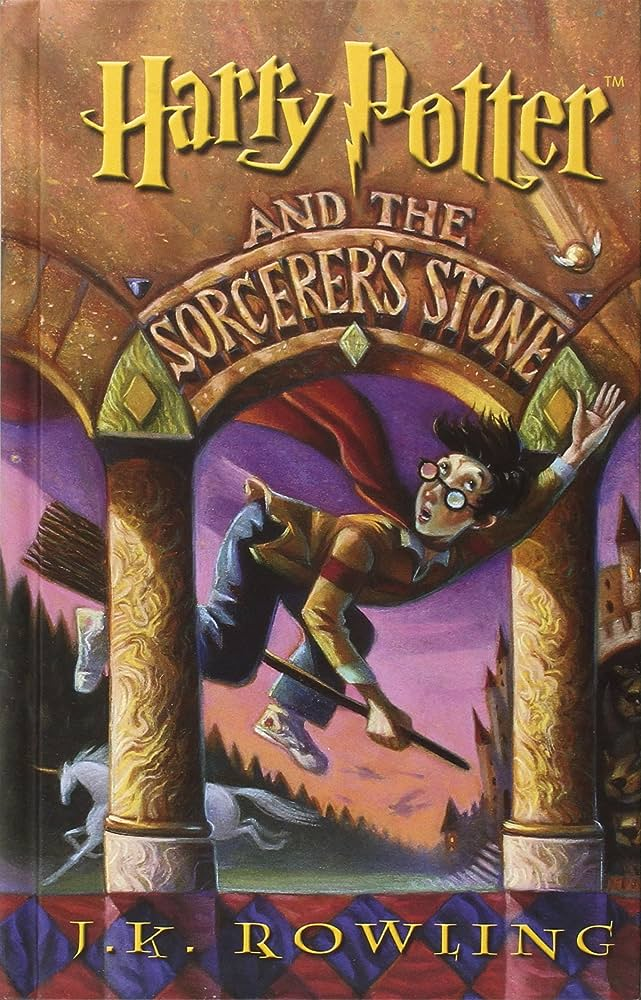
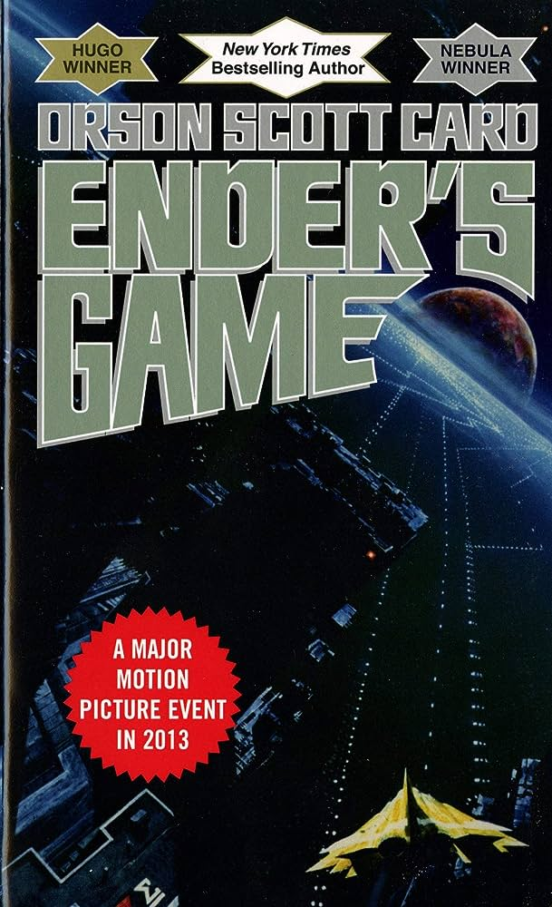
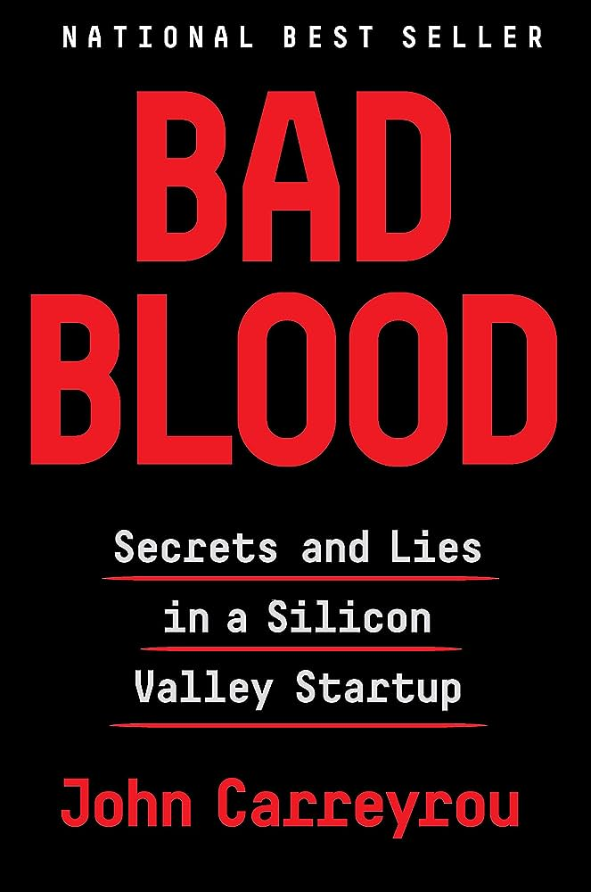
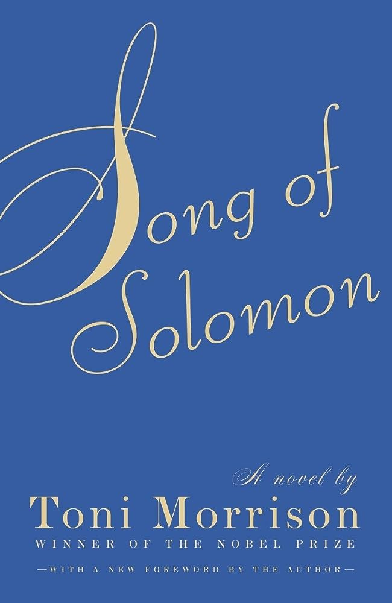

What Do People Do All Day? by Richard Scarry
(age <5)
I can still remember sitting in my living room with my parents, flipping through this book.
Its pages are covered by detailed illustrations and descriptions of the happenings of people in various occupations.
This book was magical to me because I could put myself into the lives of all these different people and imagine my own future.
I can remember opening the book to a new page each day, studying intently the life of a ship engine mechanic, and learning how to make the life in the book into my own.

The Harry Potter series by J.K. Rowling
(grades 2-3)
I lost myself in the Harry Potter series. I need more than one hand to count how many times I've read and reread each book.
I downright refused to read anything else.
Maybe it was the sign of a picky reader, or maybe I had discovered the joy of reading for pleasure; for the first time, books on a page could create worlds that I deeply cared about. It was probably a bit of both.
My love of fantasy continued, and that remained my primary genre, fueled by staples such as Christopher Paolini's Eragon and Philip Pullman's The Golden Compass series.

Ender's Game by Orson Scott Card
(grade 4)
My parents grew up on the sci-fi novels that found their way to the Soviet Union; Stanislaw Lem and Robert Heinlein were household names. They shared that love with me, which led me to Ender's Game.
I said this was my favorite book for years, because something about its intertwined storylines gave me a taste of complexity I didn't know I was craving. Beyond that, I wanted to live the life of Ender, and the closest I could get was to learn from his mistakes and emulate his actions.
It turns out that lessons learned in deep space might not be so alien on Earth.
(Looking at this pick and the last, it seems like I had a knack for choosing authors who would later become controversial! Or perhaps wealthy authors just have a knack for becoming controversial).

Bad Blood by John Carreyrou
(grade 8)
Bad Blood is a summary of an investigative journalism project unveiling a case of investor fraud.
Bad Blood is a detective novel, riddled with dramatic irony, as the author drops breadcrumps leading to the lies of a conniving Silicon Valley startup founder.
Something about Carreyrou's writing made a story about investors and meetings impossible to put down. It turns out that good writing can make even business meetings into gripping scenes.
This book also sparked a love for the corporate drama genre, because there's something captivating about the inner lives of people with wealth and power beyond imagination.
And maybe a little bit of Schadenfreude.


The Great Gatsby by F. Scott Fitzgerald
Song of Solomon by Toni Morrison
(grade 11)
These two books go hand-in-hand for me. They pushed me in a new way. These were the first books I'd read in school that had so much deep complexity and symbolism.
I'm sure I'd read complex stories before, but English class last year pushed me to hunt for the pick points which could tie together a web of meaning and understanding.
Anaylzing these novels felt like flattening a bedsheet: with every surface I uncovered, the sheet contorted to hide others. It was impossible to hold the complexity of the entire book together in a single thought.
For some reason, that feeling was immensly satisfying.